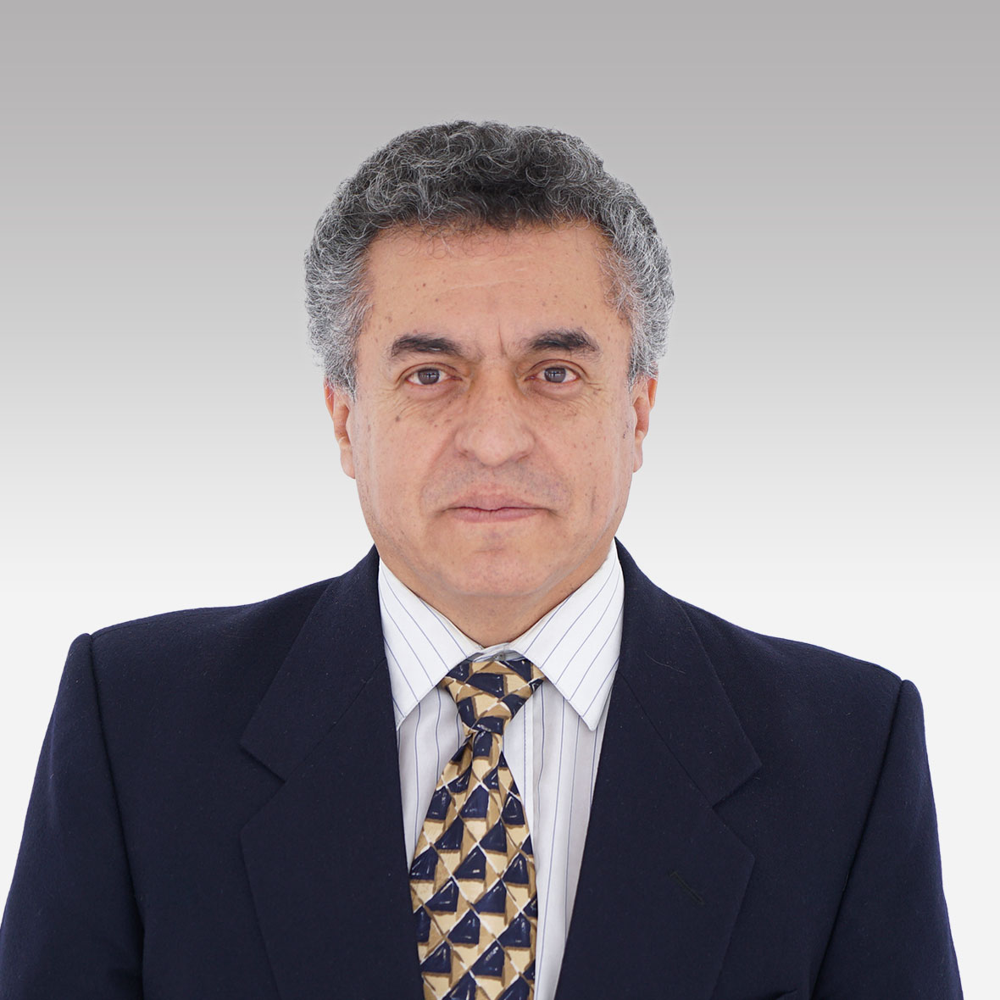

Equipo de Investigación

Dr. Luis Ismael Minchala Ávila
Profesor-investigador, DEET, Universidad de Cuenca. Investigador principal en control de sistemas no lineales y operador de Koopman. Titular del proyecto.
ismael.minchala@ucuenca.edu.ec
Alcides Fabián Araujo Pacheco
Investigador del DEET. Contribuyó al análisis funcional y metodología de control basada en Koopman.
Dr. Luis Eduardo Garza Castañón
Investigador asociado internacional, especialista en sistemas de control y diagnóstico de fallas.
Juan Francisco Durán Siguenza
Responsable de mantenimiento y operación experimental del sistema multitanque en el laboratorio de automatización UC.
Ing. Marcos Lenin Villarreal Esquivel
Tesis sobre modelamiento aproximado mediante el operador de Koopman. Publicación en Mathematics MDPI.
Luis Antonio Andrade Matute
Desarrolló el gemelo digital del sistema multitanque con OPC UA. Publicación en IEEE Xplore 2025.
Ariel Josue Molina Jara
Apoyo en implementación de algoritmos de control y experimentos en el laboratorio de sistemas de control.
Ayudantes de Investigación
Karla Victoria Barrera Saavedra · Diego Enmanuel Zarie Bonilla